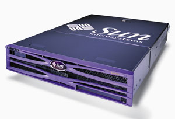

Александр Минаков
Современные бизнес-задачи требуют качественно новых подходов к обработке информации и организации процесса принятия решений. Объем данных, требующих обработки, растет высокими темпами. При этом все большую роль играет временной фактор, когда задержка в принятии решения может заметно сказаться на финансовых результатах деятельности компании. Такие тенденции предъявляют новые требования к организации вычислительного процесса и влекут за собой новые решения и технологии.
Архитектура SPARC (Scalable Processor Architecture) - одна из самых распространенных среди RISC-систем. Процессоры SPARC лицензированы и изготавливаются по спецификациям корпорации Sun Microsystems (http://www.sun.com) несколькими производителями. Надо отметить, что отделение микроэлектроники Sun занимается разработкой и распространением не только высокопроизводительных процессоров, но и системных плат на их основе, а также лицензий на использование ядра SPARC- и Java-процессоров. Вся продукция ориентирована на OEM-производителей компьютеров, телекоммуникационного оборудования, электронных устройств, средств автоматизации производства и т. п. Стоит отметить, что Sun Microsystems - одна из немногих компаний, разрабатывающих вычислительные системы от начала до конца, т. е. от микропроцессоров и архитектуры вычислительной системы до ПО, поэтому все этапы разработки проходят в рамках единой концепции, что дает компании определенные преимущества по сравнению с конкурентами.
В производстве процессоров SPARC Sun Microsystems тесно сотрудничает с компанией Texas Instruments (http://www.ti.com), более десяти лет используя ее производственные мощности для производства полупроводников. Сотрудничество здесь обоюдовыгодное: технологии, которые применяются для создания процессоров, Texas Instruments затем использует при создании своих собственных продуктов.
Третье поколение 64-разрядных SPARC RISC-микропроцессоров с тактовой частотой более 1 ГГц предназначено для старших моделей рабочих станций, содержащих до четырех процессоров, серверов начального уровня и уровня рабочей группы, и обеспечивает более высокую степень интеграции системы и сокращение стоимости. Так, процессор UltraSPARC IIIi - это высокопроизводительный высокоинтегрированный суперскалярный процессор, построенный по 64-разрядной RISC-архитектуре SPARC V9. Он способен обеспечить выполнение в установившемcя режиме до четырех команд за цикл, несмотря на условные ветвления и непопадания в кэш-память, и поддерживает 64-разрядное виртуальное адресное пространство и 43-разрядное физическое адресное пространство. Основной набор команд процессора был расширен за счет специализированных команд, обеспечивающих выполнение наиболее часто используемых операций, связанных с графической обработкой, сжатием данных, обработкой сигналов, трехмерной визуализацией, сетями, телекоммуникациями и другими функциями.
Цели разработки UltraSPARC IIIi
Хотя при разработке UltraSPARC IIIi ставились те же четыре основные задачи реализации совместимости, масштабируемости, производительности и функций RAS (Reliability, Serviceability and Availability - надежность, обслуживаемость и доступность), что и при разработке других моделей семейства UltraSPARC III, их решение в процессорах серии i имеет свои особенности.
Для архитектуры SPARC имеется большое число приложений третьих фирм, поэтому совместимость - это главное требование ко всем новым процессорам SPARC. Это требование не ограничивается только приложениями, но распространяется и на операционную систему. Дело в том, что необходимо обеспечить увеличение производительности прикладных программ без повторной компиляции их исходного кода. Это преимущество необходимо реализовать для всех приложений, а не только для тех, которые оптимизированы для новой архитектуры. Для выполнения этих требований нужна микропроцессорная архитектура, увеличивающая производительность по сравнению с предыдущим поколением без изменения исходного кода программ.
Процессоры SPARC спроектированы так, чтобы обеспечить не только рост производительности от поколения к поколению или от реализации к реализации, но и масштабируемость от одного процессора к многопроцессорной конфигурации. Так, для масштабируемости микропроцессорных систем на базе UltraSPARC IIIi необходимы накристальная подсистема памяти и шина интерфейса. Первоначальная конфигурация системной шины JBus может поддерживать до четырех процессоров UltraSPARC IIIi.
Другой основной целью разработки UltraSPARC IIIi, как и любого процессора UltraSPARC, была производительность. Для UltraSPARC IIIi требуемый уровень производительности сместился от настольных систем high-end и многопроцессорных серверов к настольным компьютерам среднего класса и младшим моделям серверов. По мнению разработчиков, UltraSPARC IIIi проектировался не просто для получения рекордов производительности при выполнении специально подобранных тестов на тщательно настроенных машинах в лабораторных условиях, но для обеспечения действительно высокой реальной производительности различных бизнес-приложений. Так, кристалл UltraSPARC IIIi снабжен большой кэш-памятью 1-го уровня для команд и данных, большой накристальной кэш-памятью 2-го уровня, накристальным контроллером памяти, поддерживающим модули оперативной памяти SDRAM Double Data Rate (DDR) 133 Мгц объемом до 16 Гбайт. Для построения конфигураций с несколькими процессорами система оборудована новой системной шиной SMP с согласованным доступом к кэш-памяти (для обеспечения когерентности) и тактовой частотой 200 МГц, обеспечивающей пропускную способность до 2,2 Гбайт/с.
Области применения
Компактность и универсальность UltraSPARC IIIi делают этот процессор оптимальным решением для многих приложений, начиная от настольных рабочих станций и серверов для небольших предприятий и до модульных серверов. Основная сфера их применения - корпоративные приложения, которым требуется масштабируемая производительность, многопроцессорность, большой объем накристальной кэш-памяти и оперативной памяти, высокая пропускная способность системы ввода-вывода.
Конфигурация UltraSPARC IIIi подходит как для задач, где нужна прежде всего высокая производительность, так и для задач, связанных с обработкой транзакций. Считается, что четырехпроцессорные системы идеальны для следующих приложений:
- онлайновая обработка транзакций;
- обработка потоковой мультимедиа-информации;
- хранилища данных/извлечение данных;
- электронная коммерция;
- системы обмена сообщениями и электронной почты, например, Microsoft Exchange и Notes;
- обработка графики и изображений;
- сетевые приложения;
- системы управления предприятием (ERP), например, SAP и PeopleSoft.
|  | Для таких серверов используются UltraSPARC IIIi.
|
Основные характеристики UltraSPARC IIIi
Как уже отмечалось, процессор UltraSPARC IIIi спроектирован на основе третьего поколения 64-разрядной архитектуры SPARC V9. Процессор имеет конвейер из 14 ступеней без задержки выполнения, позволяющий выполнить за такт четыре команды с помощью шести исполнительных устройств: два целочисленных для арифметических, логических операций и операций сдвига, два с плавающей точкой для сложения и умножения, одно для загрузки/хранения в памяти и одно для предсказания ветвлений.
| Процессор UltraSPARC IIIi.
|
Буфер трансляции адресов поддерживает страницы размером 8, 64, 512 Кбайт и 4 Мбайт. Задача его заключается в кэшировании транслируемых физических адресов памяти. Процесс трансляции необходим процессору при обращении к любым данным, хранящимся в основной памяти, а потому кэширование адресов существенно сокращает время, проходящее с момента запроса данных процессором до момента их получения. Дело в том, что в момент обращения к оперативной памяти процессор обращается не к физическому адресу ячейки, а к виртуальному (естественно, между ними есть строгое соответствие). Именно эти преобразованные адреса и размещаются в буфере, причем отдельно для инструкций и для данных. Если процессор не найдет нужный ему адрес, придется заняться его вычислением. Учитывая совсем немаленькое количество адресов в большинстве случаев, подобные операции вполне могут притормозить процессор. Таким образом, увеличение буфера должно самым положительным образом сказаться на производительности.
Накристальная кэш-память 1-го уровня включает кэш-память данных объемом 64 Кбайт, кэш-память команд объемом 32 Кбайт, кэш-память предвыборки данных объемом 2 Кбайт и кэш-память записи данных объемом 2 Кбайт. Вся кэш-память четырехканальная, а в кэш-памяти команд и данных используется проверка четности.
В числе новых функций микропроцессора - и новый интерфейс системной шины JBus, оптимизированный для одно- и четырехпроцессорных систем начального уровня и серверов рабочей группы и обеспечивающий более высокий уровень интеграции системы и снижение стоимости. Он представляет собой 200-МГц интерфейс систем SMP с обеспечением когерентности кэш-памяти. Здесь используются приемопередатчики ввода-вывода с напряжением питания 1,5 В, выполненные по так называемой схемотехнике Dynamic Termination Logic (DTL). Накристальная кэш-память 2-го уровня улучшает производительность и степень интеграции системы, а также использует механизм исправления ошибок с помощью контроля четности ECC, что повышает надежность. Микропроцессор также использует 266-МГц интерфейс памяти 16-B DDR-1 с логикой SSTL (Stub Series Terminated Logic).
Особенности UltraSPARC IIIiВысокая производительность процессора UltraSPARC IIIi достигается благодаря следующим особенностям.
Важно отметить, что при разработке UltraSPARC IIIi особое внимание уделялось совместимости с программным обеспечением, разработанным для предыдущих поколений 32-разрядных и 64-разрядных процессоров. |
Особенности новой архитектуры
Одномегабайтная четырехканальная кэш-память 2-го уровня со строками размером 64 байт используется для кэширования как команд, так и данных, и имеет физическую таблицу индексов и тегов. Здесь применяется псевдослучайная политика замены строк в кэш-памяти (pseudorandom cache line-replacement policy). Эта кэш-память с обратной записью поддерживает протокол когерентности MOESI (Modified-Owned-Exclusive-Shared-Invalid) с пятью состояниями строки. Дополнительное (пятое) состояние строки в этом протоколе называется "собственная" (Owned). Оно включается, если запрашиваемые данные находятся в кэш-памяти процессора, они были изменены, и копия в памяти недостоверна. Реализация протокола MOESI довольно трудоемка и требует включения в процессор большего количества транзисторов. Однако такой протокол прекрасно работает с двумя адресными портами FSB "точка-точка" и повышает эффективность работы шины. Протокол работает на половине частоты центрального процессора с шеститактовой задержкой и двухтактовой выдачей. Загрузка при использовании запаздывания составляет 15 тактов. Кэш-память использует защиту четности для тегов и ECC для данных - 36 битов ECC на строку или 9 битов для каждых 16 байт, что обеспечивает исправление любой однобитной ошибки и обнаружение любых идущих подряд ошибок в 4 битах.
Другое технологическое усовершенствование UltraSPARC IIIi - контроллер памяти MCU (Memory Control Unit). Он управляет операциями с внешней памятью SDRAM. Размещение контроллера памяти на кристалле уменьшает задержку при обращении к памяти и обеспечивает масштабирование пропускной способности памяти при увеличении числа процессоров. Контроллер основной памяти поддерживает до четырех банков модулей Double Data Rate (DDR1) SDRAM 133 МГц общей емкостью до 16 Гбайт. В пиковом режиме контроллер памяти обеспечивает пропускную способность 4,25 Гбайт/с. Он использует 128-разрядную шину данных с 9 дополнительными разрядами для ECC. Этот контроллер обеспечивает прямой доступ к локальной памяти и сокращает трафик по JBus. Обычно задержка при обращении к памяти составляет 100 нс.
Новый интерфейс системной шины JBus имеет сокращенное число контактов (171 сигнал с логикой DTL). Здесь обеспечивается согласованность содержимого кэш-памяти и передача данных с коммутацией пакетов и поддерживается до семи агентов или портов. Эта 128-разрядная общая шина для адресов и данных, работающая на частоте до 200 МГц, обеспечивает пиковую скорость 3,2 Гбайт/с. Шина поддерживает распределенный циклический арбитраж с задержками от нуля до двух тактов. Отслеживание адресов ОЗУ, по которым происходит обращение к данным, полностью отделено от доступа к памяти.
Отсутствуют какие-либо требования к жестким задержкам или отслеживанию адресов и данных. Результаты отслеживания, а также кодированные сигналы управления потоком представляют собой сигналы типа "точка-точка". Обычно задержка при отслеживании составляет три такта. Управление потоком для адресов осуществляется глобально, а потоками данных - для каждого порта отдельно. Данные могут возвращаться с нарушением очередности, а данные для записи всегда передаются вместе с адресом.
Шина поддерживает конвейерный режим работы на частоте 200 МГц с использованием повторителей для соединения разделяемых сегментов шины при числе нагрузок у каждого не более трех. Синхронизация часов осуществляется глобально. Шина также поддерживает режим работы с пониженным энергопотреблением на частотах, составляющих 1/2 и 1/32 от тактовой частоты процессора.
Как и предыдущие модели UltraSPARC, новый процессор изготавливается на производственных мощностях компании Texas Instruments. Это первый основной продукт, изготовленный по новой технологии с проектными нормами 0,13 мкм. В таблице приведены основные физические характеристики UltraSPARC IIIi.
Характеристики процессора UltraSPARC IIIi
| Технологический процесс | 0,13 мкм, CMOS |
| Частота, ГГц | 1,06 |
| Слои металла | 6 медных, 1 алюминиевый |
| Число транзисторов | 87,5 млн |
| Напряжение ядра, В | 1,4 |
| Максимальное тепловыделение, Вт | 46 (при 1,06 ГГц) |
| Размер кристалла, кв. мм | 178,5 |
| Число контактов | 959 |
| Корпус | Керамический, 959 выводов, PGA |
| Кэш-память L2 (4-канальная), Мбайт | 1 |
Процессор изготовляется по медной технологии 7LM Cu CMOS 0,13 мкм с 7 слоями металлизации, разработанной Texas Instruments. Номинальное напряжение питания составляет 1,4 В, номинальная длина канала (Lgate) - 65 нм, и стек интерконнекта использует диэлектрический материал low-k (K = 3,6). Число транзисторов равно 87,5 млн, из которых 63 млн отведено под кэш-память. Для кристалла используется 959-контактный керамический корпус типа flipchip PGA.
Механизм обнаружения и устранения ошибок Error Detection and Correction (EDC) широко применяется в каналах передачи данных и адресов UltraSPARC IIIi для надежной защиты от ошибок. Во внешней кэш-памяти и основной памяти исправляются все однобитные ошибки и обнаруживаются двухбитные.
Кроме того, UltraSPARC IIIi обеспечивает защиту с проверкой четности для массивов физических тегов, массивов отслеживания тегов и массивов данных для кэш-памяти данных и команд. При обнаружении ошибки четности строка повторно загружается в кэш-память из памяти более низкого уровня. Кэш-память второго уровня (включая теги и данные) и основная память защищаются с помощью ECC.
Считается, что процессор UltraSPARC IIIi способен устранить больше ошибок, чем устройства любого другого поколения UltraSPARC. В небольших многопроцессорных системах риск распространения ошибок в одном процессоре на остальные во многих случаях устраняется полностью, а в остальных сводится к минимуму благодаря тому, что каждый UltraSPARC IIIi управляет собственной локальной памятью.
Организация многопроцессорных систем
Процессор UltraSPARC IIIi разрабатывался для перспективного сегмента компьютеров с числом процессоров от одного до четырех. Любая система на базе UltraSPARC IIIi должна включать JBus и JIO. JBus - это системная шина, поддерживающая небольшие (1 - 4 процессора) системы и реализующая так называемое бесшовное соединение (glueless logic) между процессорами. Микросхема JIO - это вспомогательный кристалл для процессора UltraSPARC IIIi. Он обеспечивает интерфейс для связи процессора с внешней подсистемой ввода-вывода и графической подсистемой.
Как уже отмечалось, JBus обеспечивает высокую пропускную способность и низкие задержки, что требуется для сетевых, телекоммуникационных и других встроенных приложений. Рассчитанная на инфраструктуру Интернет, где постоянно не хватает полосы пропускания, JBus предназначена для многопроцессорных 64-разрядных серверов и использует 128-разрядные запросы на расщепление транзакций и шины данных с коммутируемыми пакетами. Это гибкая, расширяемая и легко реализуемая структура шин. Процессоры могут без какой-либо связующей логики подключаться к общей шине с согласованием доступа. JBus способна обеспеспечить масштабируемые (от 1 до 4 процессоров) конфигурации Symmetric Multi-Processor (SMP) или Chip Multi- Processor (CMP) с различными вариантами ширины шины данных, энергопотребления, габаритов и стоимости. Стоит отметить, что JBus может использоваться на различных платформах.
Микросхема JIO - это вспомогательный чип для процессора UltraSPARC IIIi. Связь между JIO и процессором (процессорами) осуществляется по высокоскоростной 16-разрядной общей шине адресов и данных с расщеплением транзакций JBus. Основная цель JIO - обеспечить интерфейс для внешнего ввода-вывода и графики в многопроцессорных SMP-системах с числом процессоров от 1 до 4. Она также освобождает шину JBus от трафика ввода-вывода, за счет чего обеспечивается более высокая скорость связи между процессорами.
Вообще говоря, у JIO пять основных функций: JBus Cluster, 33 МГц/66 МГц 32- /64-разрядный PCI Cluster, Graphics Cluster, кэш ввода-вывода и I/O Memory Management Unit (IOMMU). Графический интерфейс можно сконфигурировать для работы в одном из двух режимов: 33 МГц/66 МГц PCI или 150 МГц UPA64s (UltraSPARC Port Architecture). Выбор режима задается на уровне системной платы и не может меняться во время работы системы.
На рисунке показан пример системы с четырьмя UltraSPARC IIIi, двумя микросхемами JIO для расширенного ввода-вывода и шиной JBus. Кристалл JIO может поддерживать до четырех UltraSPARC IIIi, однако в показанной конфигурации микросхема Bell Repeater устанавливается для обеспечения работы JBus на максимальной частоте 200 МГц. Обычно микросхемы Bell Repeater используются, если на шине JBus более трех нагрузок. Они принимают сигналы JBus из одного сегмента шины и передают их на три других в течение следующего цикла. Кроме того, две микросхемы JIO обеспечивают увеличение скорости ввода-вывода.
Как видно, микросхема JIO имеет универсальный интерфейс, поддерживающий шины UPA64S (UltraSPARC Port Architecture) и 64-разрядный/66 МГц PCI 2.2, что позволяет использовать в одной и той же системной плате как мощные графические ускорители Sun, так и внешние графические устройства PCI.
"Дорожная карта" для процессоров UltraSPARCПерспективный процессор корпорации Sun Microsystems, UltraSPARC IV, будет иметь два ядра на одном кристалле. При этом его можно будет устанавливать в существующие серверы на процессорах UltraSPARC III. Версия UltraSPARC IV с кодовым названием Gemini предназначается для недорогих серверов, а также для организации модульных (blade) систем. Предполагается, что Gemini, как и UltraSPARC IV и новейший UltraSPARC III, будет производиться по технологическому процессу с соблюдением проектных норм 130 нм. Когда появится кристалл UltraSPARC V, он должен быть, по заявлениям Sun, впятеро быстрее современных кристаллов и, кроме того, обладать улучшенными возможностями защиты данных и работы в мультипроцессорных системах. Этот кристалл сможет выполнять набор новых команд, называемый VIS 3. Если предыдущие VIS-расширения ускоряли в основном медийные операции (например, кодирование видео), то новый набор команд будет ускорять работу более общих приложений, таких, как шифрование данных. Поначалу кристалл UltraSPARC V будет изготавливаться с соблюдением технологических норм 90 нм. У этого процессора будет два режима работы: для бизнес-приложений (таких, как операции с базами данных) и для решения сложных технических задач (например, моделирования автокатастроф). Первые кристаллы, использующие технологию Afara, также будут изготавливаться по 90-нм технологическому процессу. Микросхемы под кодовым названием Niagara, в которых и будет применена данная технология, жертвуют усовершенствованиями, позволяющими быстро решать единственную задачу, ради упрощенной конструкции для одновременного решения множества задач, или потоков. Sun Microsystems называет эту концепцию Chip Multi-Threading и считает ее частью общего плана Throughput Computing. У Niagara будет встроенная высокоуровневая поддержка Ethernet и средств шифрования. Каждый кристалл Niagara будет содержать восемь ядер, независимо исполняющих по четыре потока, причем главная "изюминка" Sun Microsystems кроется в правилах определения активного потока. Наступит время, когда семейства Niagara и UltraSPARC сольются в процессоре, производительность которого будет в 30 раз выше, чем у современных UltraSPARC III 1,2 ГГц. Сегодня полагают, что этот новый кристалл обеспечит аппаратное ускорение Java и будет интенсивно использовать асинхронные схемы. В Sun Microsystems много лет работают над конструкцией асинхронных микросхем, в которых разные компоненты процессора управляются разными тактовыми сигналами. |